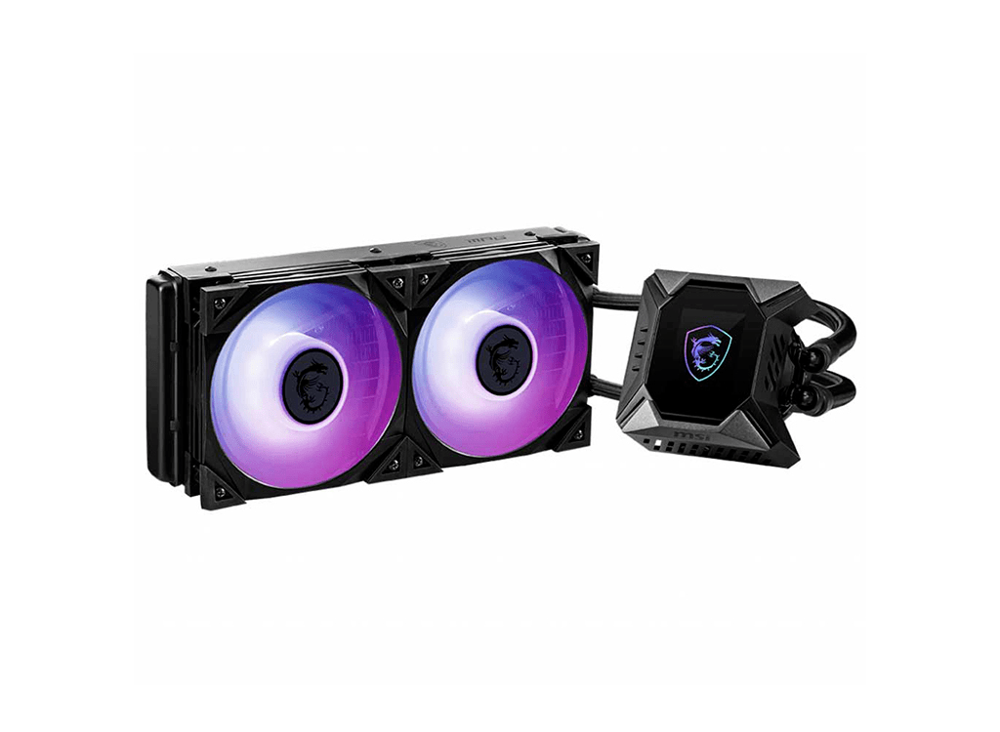

MSI H510M-A PRO - LGA1200, Intel H510, Mirco-ATX, 2x DDR4 hasta 64GB, PCI-Express 4.0 x16, HDMI, VGA, USB, 1Gbit Red
La serie PRO ayuda a los usuarios a trabajar de forma más inteligente al ofrecer una experiencia eficiente y productiva. Con una funcionalidad estable y un ensamblaje de alta calidad, las placas base de la serie PRO brindan no solo flujos de trabajo profesionales optimizados, sino también menos resolución de problemas y longevidad.
Detecta las temperaturas de la CPU y la GPU y ajusta automáticamente la función del ventilador de los ventiladores del sistema a un valor adecuado mediante la adopción de MSI AI ENGINE.

$ 89.90
AZZA Crimson 211 - ATX - Micro ATX, Conectores 1x USB 3.0 / 1x USB 2.0, Ventana Lateral, 2x Abanico de 120mm LED Rojo, Negro/Rojo
Tiene todas las características estándar que uno necesitaría para una plataforma de juegos, además de algunos extras adicionales. La carcasa es mínima con el RGB, con una placa con el logotipo RGB en el panel frontal, controlable a través de un botón en la parte superior. El 211 cuenta con un panel lateral de vidrio templado de alta calidad y durabilidad, de modo que los componentes de la caja se pueden mostrar para que todos lo vean.

$ 59.90
Asus DUAL-RX6700XT-O12G - AMD Radeon RX 6700 XT, 12GB GDDR6, 192-bit, PCI-E 4.0, DisplayPort, HDMI, 2x Abanico
Al ofrecer la última experiencia de arquitectura AMD RDNA ™ 2 en su forma más pura, la ASUS Dual Radeon ™ RX 6700 XT combina rendimiento y simplicidad como ninguna otra. Aprovechando las tecnologías de enfriamiento avanzadas derivadas de las tarjetas gráficas emblemáticas, la Dual opta por la sustancia sobre el estilo, la elección perfecta para una construcción bien equilibrada.
Abróchate el cinturón y disfruta de la destreza de juego de vanguardia.

$1,099.90
MSI MPG CoreLiquid K240 - Enfriamiento Liquido Para Procesador, Pantalla 2.4" LCD, 2x Abanico ARGB, Socket LGA 1150/1151/1155/1156/1200/1366/2011/2011-3/2066, Socket AMD AM4/FM2+/FM2/FM1/AM3+/AM2+/AM2, Conector 4 Pines
Potente con un propósito, la serie MPG CORELIQUID K desciende. La serie MPG CORELIQUID K elimina su imagen tradicional de un enfriador de líquido y la lleva a una realidad completamente nueva. Con características poderosas y esculpidas con apariencias llamativas, la serie MPG CORELIQUID K está aquí para establecer el punto de referencia, un juego a la vez.

$215.90